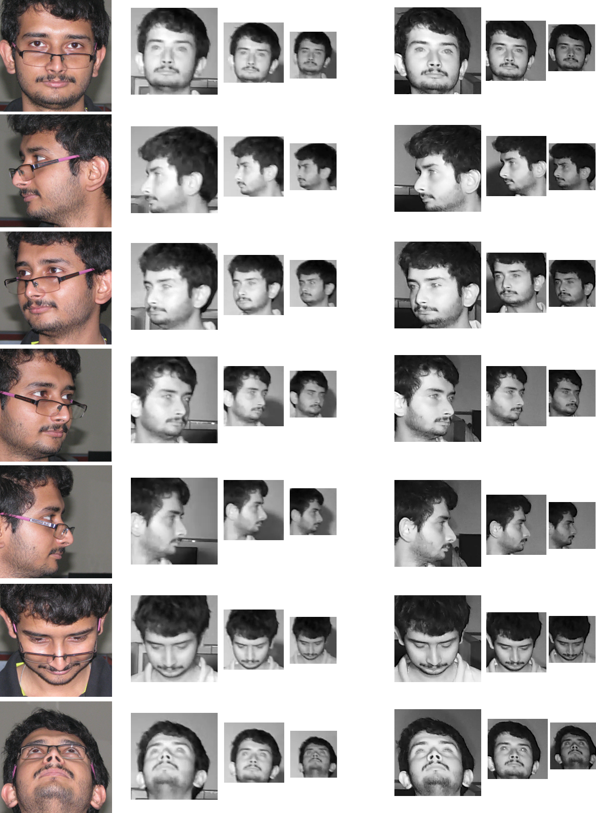

Heterogenous Face Recognition across Pose and Resolution Database
Sivaram Prasad Mudunuri * Shashanka Venkataramanan * Soma Biswas
Abstract
Recently, near-infrared (NIR) images are increasngly being captured for recognizing faces in low-light/night-time conditions. Matching these images against the controlled high resolution visible facial images usually present in the database is a challenging task. In surveillance scenarios, the NIR images can have very low resolution and also non-frontal pose which makes the problem even more challenging. In this work, we propose an orthogonal dictionary alignment approach for addressing this problem. We also propose a re-ranking approach to further improve the recognition performance for each probe by combining the rank list given by the proposed algorithm with that given by another complementary feature/algorithm. Finally, we have also collected our own database HPR (Heterogeneous face recognition across Pose and Resolution) which has facial images captured from two surveillance quality NIR cameras and one high resolution visible camera, with significant variations in head pose and resolution, which we will make publicly available. This dataset will facilitate systematic research in this very challenging and important research area. Extensive experiments on the modified CASIA NIR-VIS 2.0 database, Surveillance Camera face database and our HPR database shows the effectiveness of the proposed approaches and the collected database.
Database Description
The proposed database has the following features:-
The database has images from 200 subjects captured with two surveillance quality cameras which can work under low light conditions in NIR mode and one HR VIS camera which captures mugshot photos.
We take the HR VIS mugshot gallery images of subjects at 4ft. distance from the camera at seven poses which accounts to a total of 1400 HR VIS images.
The NIR still images are captured when the subjects stand at three different distances (8ft., 12ft. and 16ft.) from the two NIR cameras thus accounting to a total of 4200 images from each camera.
The VIS images are saved as: subSubID_posePoseID.png and NIR images are saved as: camCamID_subSubID_posePoseID_distDistID.bmp.

Sample images of our proposed PRH database. First column: HR VIS faces at 7 different poses (pose 00 to pose 06); Column 2 to 4: NIR faces at same pose as that of HR VIS face of that row but captured with CP Plus PTZ Camera (NIR cam01) when the subject is standing at 8 ft., 12 ft. and 16 ft. distances respectively. Column 5 to 7: Same as that of column 2 to 5 but captured with HIK Vision Bullet Camera (NIR cam02).